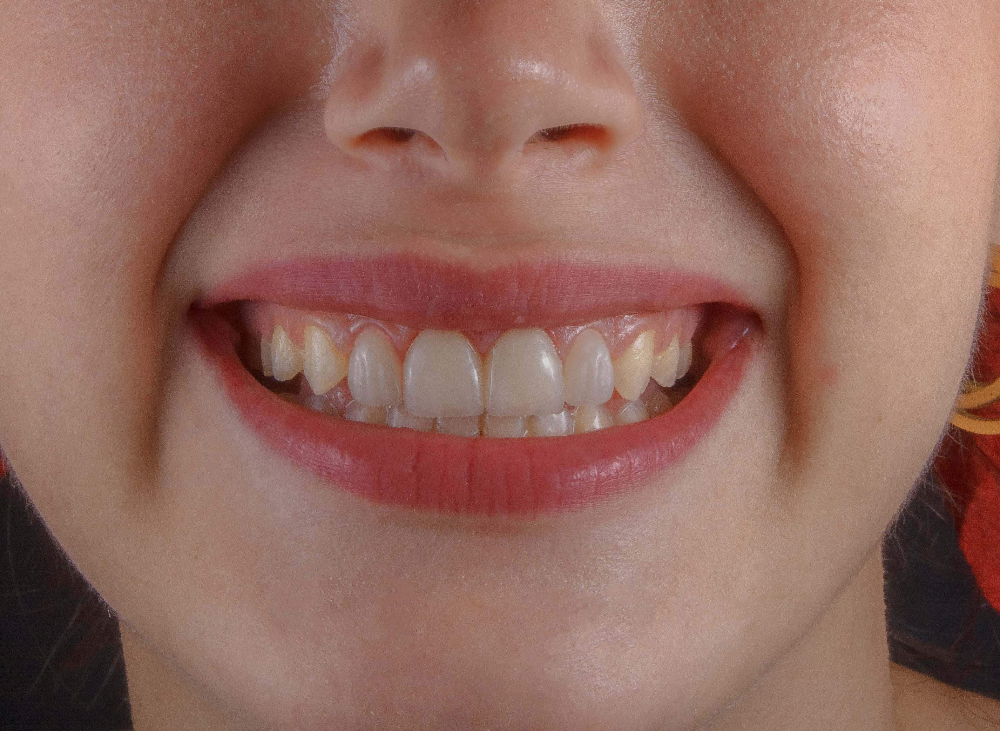
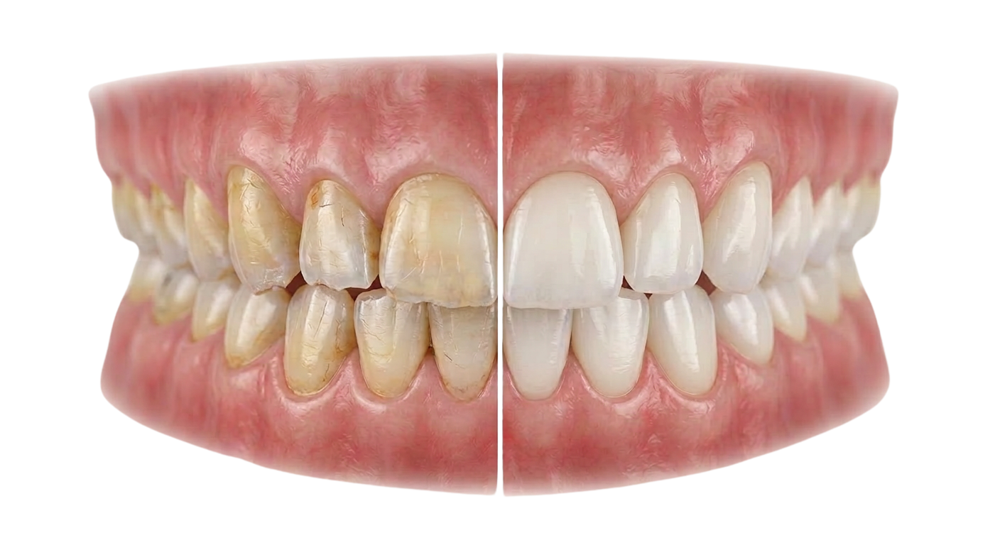
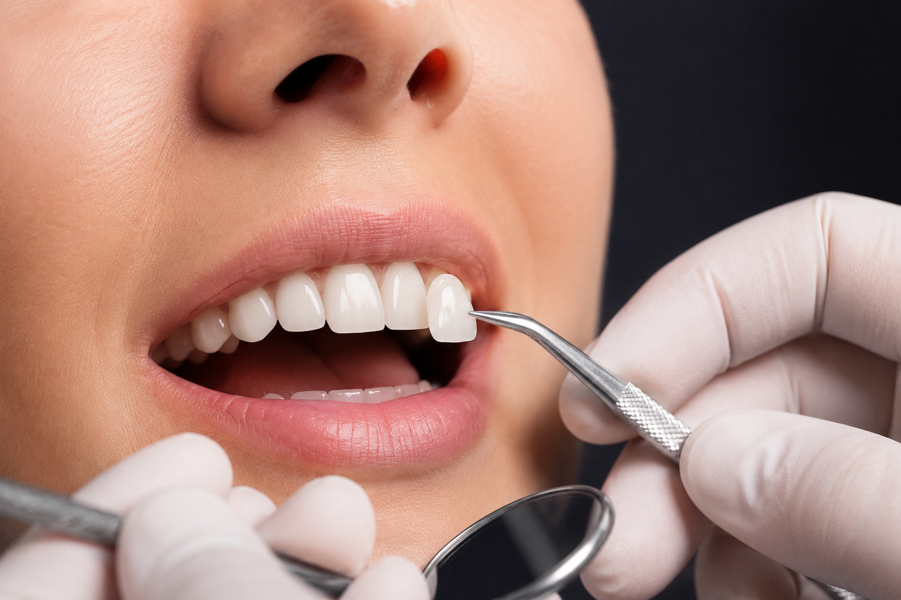
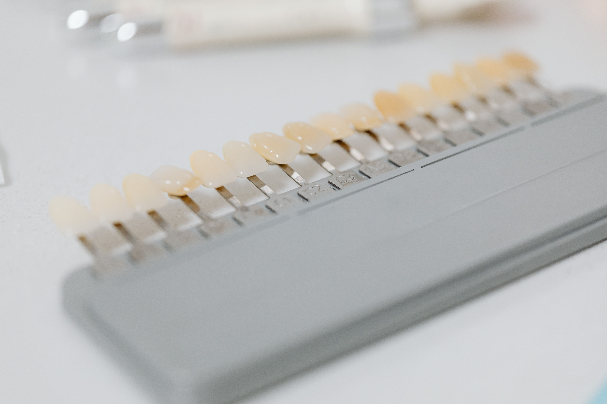

Smile design is a personalized aesthetic procedure planned by evaluating the teeth, gums, lip structure, and facial features as a cohesive whole. The goal is to achieve a more aesthetic, natural, and harmonious smile while also preserving oral and dental health. By combining various treatment methods tailored to the individual's needs, the aim is to achieve ideal results in terms of both function and aesthetics.
The goal of smile design is to achieve results that harmonize with an individual's facial features and natural appearance. Through proper planning and appropriate treatment methods, it is possible to create a smile that looks natural as well as aesthetically pleasing. Smile design is planned by taking into account each individual's facial structure, lip shape, dental anatomy, and aesthetic expectations. In this way, the aim is to achieve a unique result that complements the person's natural look.
It is suitable for individuals with aesthetic concerns regarding the color, shape, size, or alignment of their teeth. It can be a suitable option for patients seeking a more harmonious and aesthetic smile. The treatment plan is determined based on the individual's needs following a detailed examination.

Teeth whitening is an aesthetic procedure that helps remove discoloration caused over time by tea, coffee, smoking, and various external factors. It aims to lighten the natural shade of the teeth by several tones using special whitening agents. Contributing to a brighter and more aesthetic smile, this procedure is currently one of the most popular aesthetic dentistry treatments.
When performed under the supervision of a specialist and with appropriate materials, the teeth whitening procedure does not damage the teeth. The pre-treatment evaluation allows for a customized plan based on the individual's needs, ensuring the treatment is applied safely.
The effect of teeth whitening treatment varies from person to person and depends on lifestyle habits. The results may vary over time. Regular oral care, reduced cigarette use, and attention to habits that can cause discoloration can help maintain the whitening effect for a longer period.
Some people may experience temporary temperature sensitivity after the procedure. This condition is usually temporary and diminishes on its own within a short period. Following the dentist's recommendations can help make the recovery process more comfortable.

Lamine veneer, teeth's front surface with thin porcelain laminates to improve aesthetic appearance. It can be chosen for teeth with color, shape, size or alignment issues. Its natural tooth appearance-preserving structure helps achieve a more aesthetic and harmonious smile.
It is suitable for individuals with tooth discoloration, minor crowding, gaps, or irregularities in tooth shape. It can be considered for patients who desire a more aesthetic smile and have appropriate oral health. Suitability is determined by the dentist following a detailed examination.
One of the most significant advantages of laminate veneers is their ability to deliver results that closely resemble the appearance of natural teeth. Thanks to their translucency and aesthetic properties, they help achieve a look that harmonizes with natural teeth. Personalized treatment planning aims to create a natural and aesthetic smile.

Zirconia coating is a modern dental restoration method that combines aesthetics and durability. It helps address tooth discoloration, structural irregularities, fractures, or loss of tooth structure. Thanks to its aesthetic qualities that closely resemble natural teeth, it is a frequently preferred treatment option for both front and back teeth.
It is suitable for individuals with aesthetic or functional tooth loss, or those with fractured, worn, or severely discolored teeth. It may also be chosen by patients seeking a more aesthetic and natural-looking smile. Suitability is assessed by the dentist following a detailed examination.
Aesthetic fillings can be applied to patients with tooth decay causing material loss, fractured, cracked, or misshapen teeth. This treatment method can be used on both front and back teeth, helping to meet both functional and aesthetic expectations. Suitability is determined by the dentist following a detailed examination.
Unlike traditional metal-supported crowns, zirconia crowns do not contain a metal substructure. Thanks to this feature, they offer a more natural aesthetic appearance while also ensuring compatibility with the gums.

Learn about our treatment processes and available appointment times by contacting us.
You can contact us for questions or appointment requests.
Monday - Saturday
10:00 - 19:00Sunday
Closed